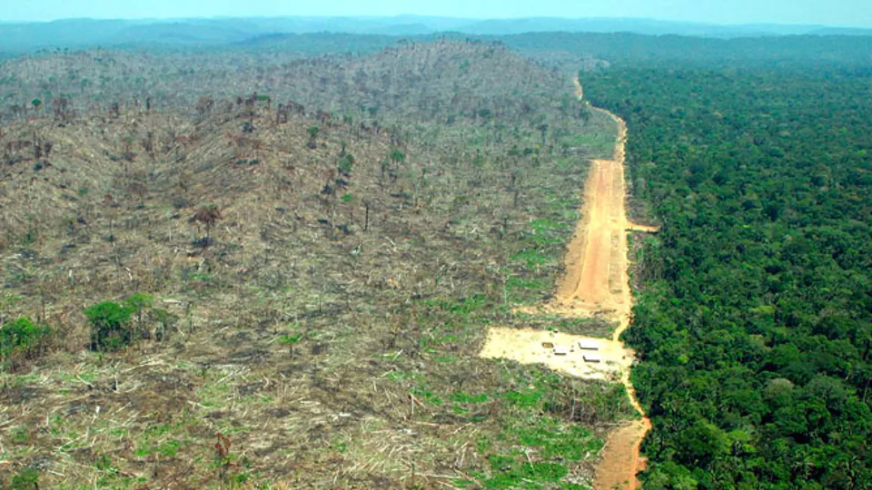

Ontbossing is een van de oorzaken voor de opwarming van de aarde. Mensen kappen stukken bos/oerwoud weg en gebruiken dit land voor verschillende doelen. Meestal gaat dit land naar de landbouw. Hierdoor zijn er niet alleen te weinig bomen om de CO² te filteren, maar ook is 18,4% van de totale CO² afkomstig van de landbouw (bron 1). Daarom moet de ontbossing sterk afnemen en moeten we meer bomen herplanten. Dit zal niet alleen het CO² gehalte laten dalen, maar ook komt er meer levensgebied voor de dieren.
Het gebruik van fossiele brandstof levert ook veel CO² op in de atmosfeer.
En om dit tegen te gaan hebben we een alternatief nodig. Denk hierbij aan zonnepanelen en groene energie. Dit zorgt niet alleen voor minder broeikasgassen in de atmosfeer, maar uiteindelijk houden we er ook een duurzame en schonere wereld aan over.